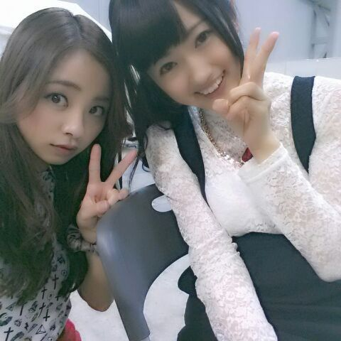
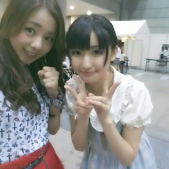

皆 おはよー＼(^o^)／
今日は 涼しい〜 ☆
今日も朝御飯は
しっかり満腹食べたよー！
ろってぃ-でーす 笑
朝ご飯は 大事だよ☆
皆も、朝ご飯はちゃんと食べてね(*^^*)
んー
うー
うわぁ〜
なんかこの温度、、、
気持ちぃ〜
すっごく眠たくなる。
あくびがっ、 とまらない(*／０`)ファア
皆に あくび うつしちゃうよ？
・・・・・・
突然いきなり
しちゅもん返しするよ^^
☆Rottyは焼鳥 どの部位が好き〜？
★ネギモモ・皮。
タレ大好きだったけど
最近ちょっと塩に浮気中。
結論 どっちも大ちゅき。
☆焼鳥何食べた〜？
★もちろん ネギモモ・皮も食べたし
つくねも１本食べたかな(・▽・)
あとぉ〜 いつも誰かが頼んだやつ
真似してる。
キャベツも皆でバリバリ食べてたよ。
☆髪型は前に戻すのかな？
★うん！ 皆とヘアスタイルかぶるし
よくメンバーと、
まったりしてる時に
過去の映像とか見るんやけど
絶対 前髪ないほうが可愛いっ。
って言われるんだお\(・ω・)/笑
あっ、そう言ってもらえて
嬉しいんよ〜♪
☆ろってぃ-自身はどの髪型が
しっくりくるん？
★自分も 前髪は流してるのが好きだから
流してる方が落ち着く(*´ω｀*)
☆前髪伸びんのめっちゃはやな〜い？
★まひろ伸びるの、めちゃ
はやいんよ〜♪
シャンプーする時に頭マッサージ
とかしてみたらどうかな(*^^*)
☆食欲の秋！食欲とまらんの〜？
★子供の頃 少食だったのに
今は めっちゃ食べれちゃう＼(^o^)／
ん〜 なんか あみ も ひなも かずみも
ちはるも 食べる子だから
つられるねん ( ＾∀＾)
☆骨博士は軟骨食べてた？
★ひなのことね！
食べてまてんでしたよ〜:-<
まひろ 軟骨 好き(/-＼*)
☆ろってぃの好きなシュシュの色は
何色なの？パステル系？原色系？
★色んな雰囲気のシュシュが
欲しいなぁ〜(・ω・)って最近
思ってるんだけど、
原色系は使わないから
パステル系とか落ち着いたかっこいい感じのが好きかなん♪
☆ネギチャンこと、栃木のアパレル店員です！少し名前変えたけど分かるかな？
★認知オッケー！！
☆読書の秋もいいですね。
お勧めの本ありますか？
★『コンビニたそがれ堂』シリーズ。
じんわり温めて 心の疲れを癒します。
温湿布みたいな本です。
皆さんに、最後に質問しても
いいですかあ(´・ω・)？
・疲れた時、 ストレスがたまった時
自分でコントロールがきかなくなった時
いつも どうしますか？


ぢゃあ またすぐ更新するね(〃ε〃)ちゅ.
のし。